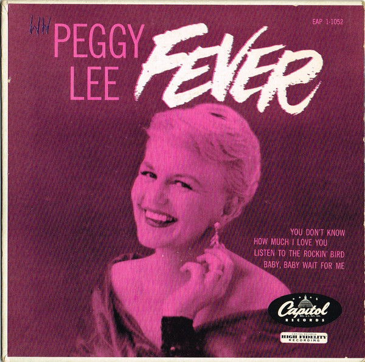

Accessibility Research Project
Please refer to my Design/Develop Roadmap for more details on this project
Overall Description
- Simple interface design with organized and thoughtful layout
- Using "alt" and "title" attribute for images/videos elements
- Sematic tagging for TAB navigation
- Additional functions for videos such as providing CC, Transcripts or Subtitles in video controls
- Provide visual elements, extra indicators to improve users navigating experience
- Suggesting indicators and call-to-action elements where fits
Video/TV Show Concept
Turn on Captions for Subtitles in Video Settings
You are watching:
Fever - Peggy Lee
Never know how much I care
When you put your arms around me
I get a fever that's so hard to bear
You give me fever,
When you kiss me
Fever when you hold me tight
Fever
In the mornin', a fever all through the night
Sun lights up the day time
Moon lights up the night
I light up when you call my name
And you know I'm gonna treat you right
You give me fever,
When you kiss me
Fever when you hold me tight
Fever
In the mornin'
A fever all through the night
Everybody's got the fever
That is somethin' you all know
Fever isn't such a new thing
Fever started a long ago
Romeo loved Juliet
Juliet she felt the same
When he put his arms around her
He said, "Julie baby you're my flame"
Thou givest fever
When we kisseth
Fever with thy flaming youth
Fever…